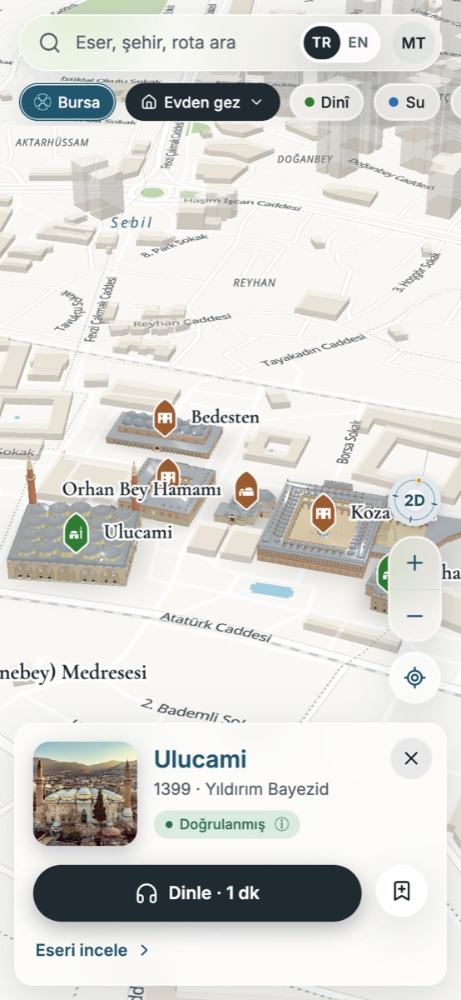
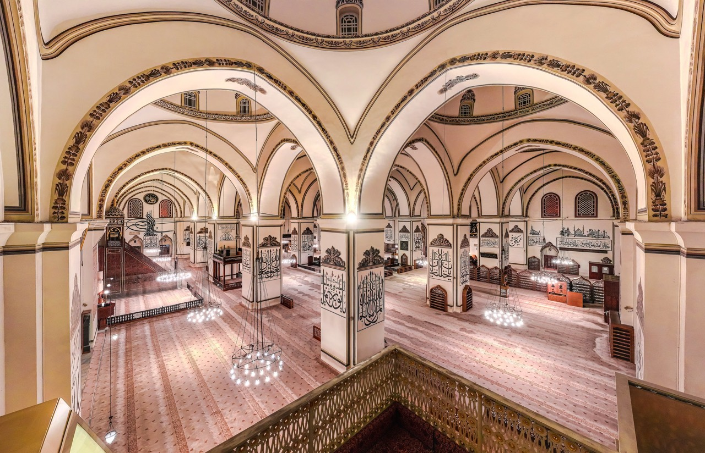
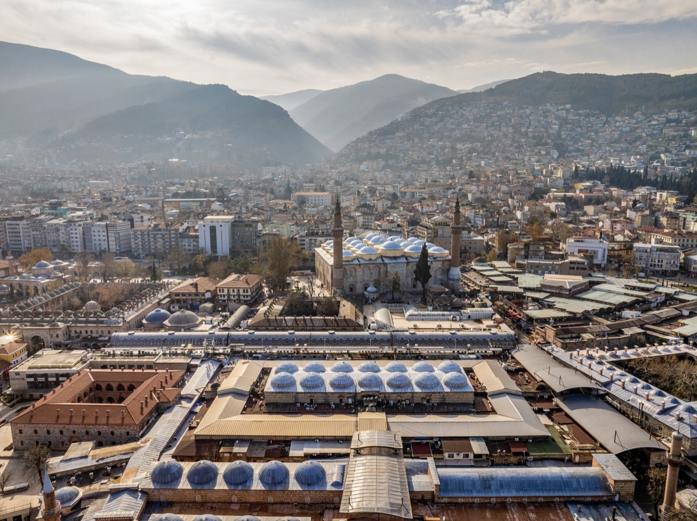
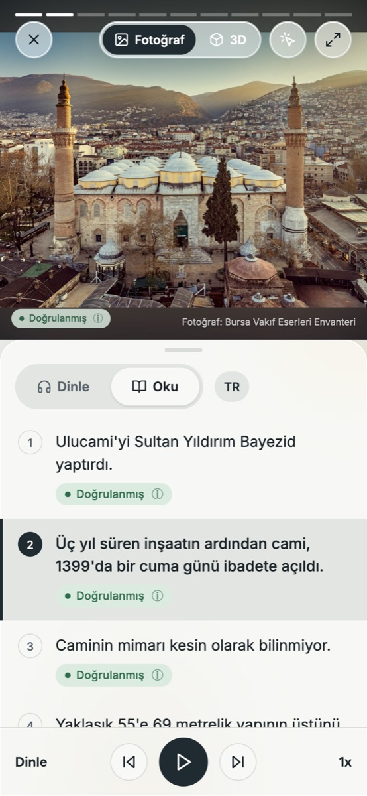
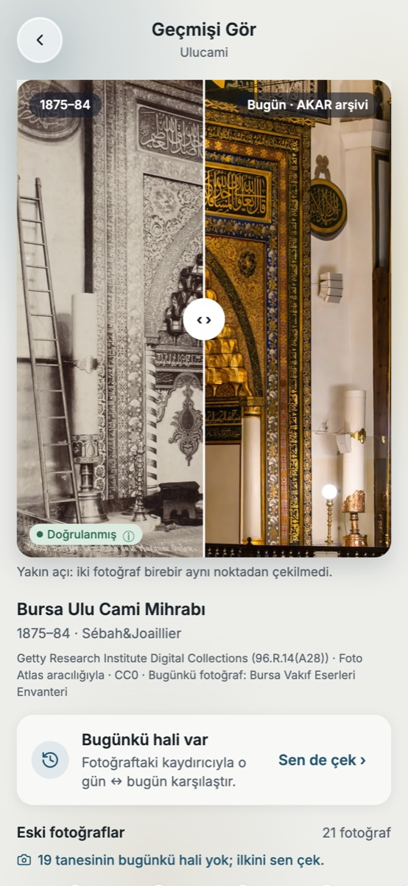
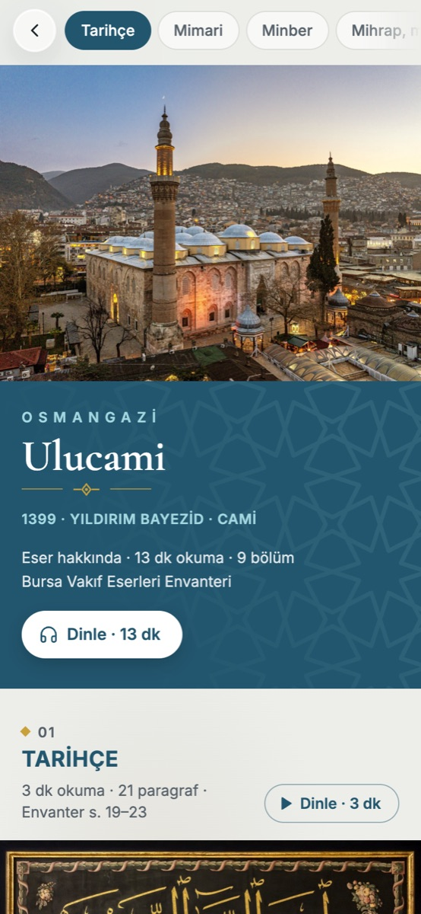
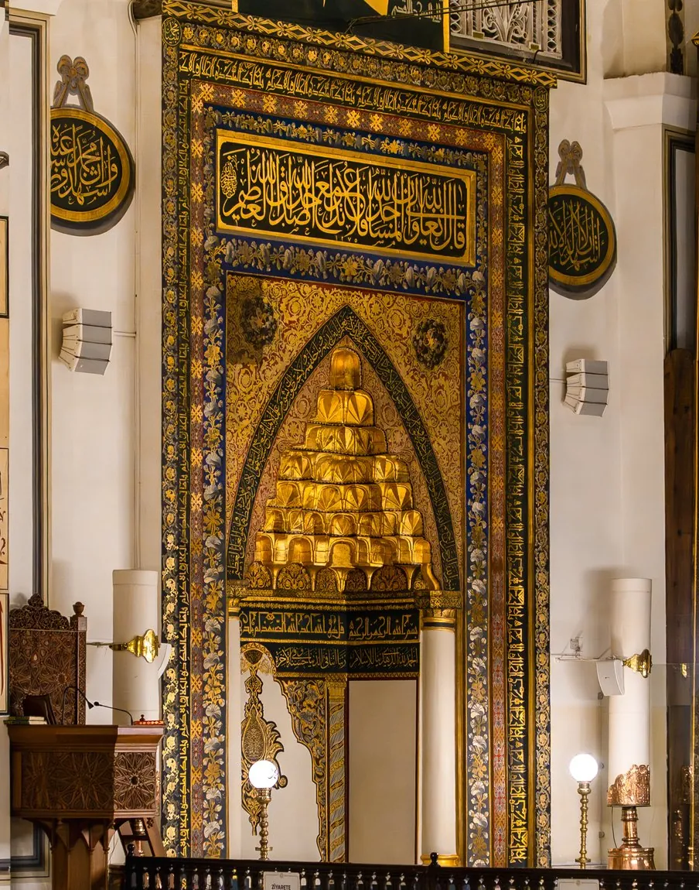
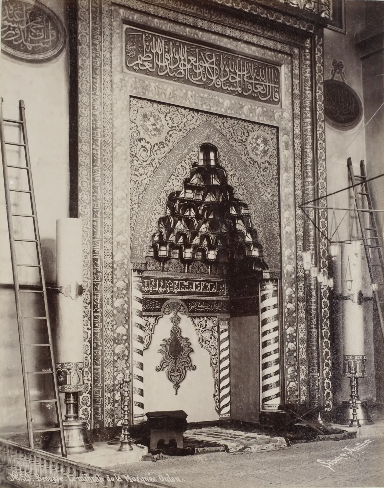
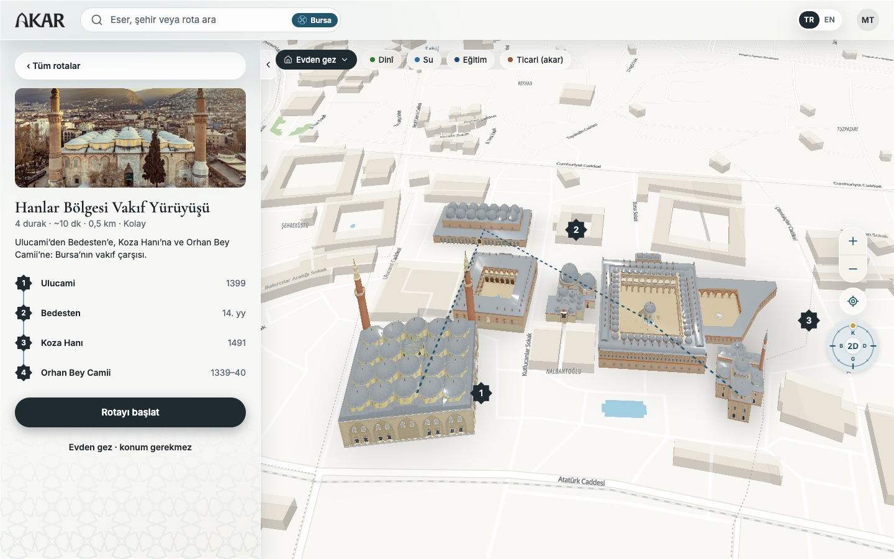

Keşfet
Harita vakıf eserlerini rolüyle gösterir. Yakınımda ya da Evden gez.
Geçmişi gör. Hikâyesini dinle. İzini bırak.
Akar, vakıf hukukunda hayır yapılarını ayakta tutan, gelir getiren mülktür.
Cami, çeşme, medrese halka ücretsiz hizmet verir: bunlar hayrattır. Han, hamam, bedesten ise kira getirir: bunlar akardır. Akarın geliri hayratın bakımını, aydınlatmasını ve görevlilerini karşılar. AKAR bu yüzyıllık sistemi haritada, anlatımda ve 3D'de görünür kılar.
Yıldırım Bayezid, Ulucami'ye gelir sağlamak için yakınına Bedesten'i de yaptırdı. · Bursa Vakıf Eserleri Envanteri, Cilt 1

Harita, sesli anlatım, 3D model ve eski fotoğraflar ayrı uygulamalarda değil; bir eserin hikâyesinde, aynı akışta.
Her eser haritada rolüyle durur: hayrat mı, akar mı? Hikâye bitince gelirin nereden nereye aktığını altın bir yayla gösteririz.
Her cümlenin altında envanterdeki sayfası ve bir güven etiketi var. Uydurulmuş tarih yok.
Şehri gezerken yanındaki esere ya da evden istediğin yere. Bir dakikalık kısa anlatım, istersen saatlerce okunacak envanter metni.

Harita vakıf eserlerini rolüyle gösterir. Yakınımda ya da Evden gez.

Anlatım cümle cümle ilerler; her cümlenin fotoğrafı ve kaynağı var.

Aynı açıdan çekilmiş eski fotoğrafla bugünü kaydırarak karşılaştır.

Envanterin tam metni; bölüm bölüm, kitap fotoğraflarıyla.
Rotadaki eserlerin içi de modelde: Ulucami'nin on iki payesi, ortadaki havuz, çivisiz minber ve duvarlardaki levhalar. Ölçüler envanterden ve rölövelerden; yazılar yalnız fotoğraftan.
Yaklaşık 55 × 69 metrelik yapının üstünü yirmi kubbe örter; kubbeler on iki kare payenin üzerine oturur.


1875–84BugünEski fotoğraf: Sébah & Joaillier, Getty Research Institute (96.R.14(A28)), Foto Atlas aracılığıyla. Bugün: Bursa Vakıf Eserleri Envanteri fotoğraf arşivi.
Eserlerin arşivlerdeki eski fotoğrafları tarih sırasıyla. Fotoğrafın nereden ve hangi yöne çekildiğini haritada görürsün; oraya gidip aynı açıdan bugünü çekebilirsin.
Bir esere dokun; uygulamada o eserin sayfası açılır.
Ulucami'den Bedesten'e, Koza Hanı'na ve Orhan Bey Camii'ne: Bursa'nın vakıf çarşısı.

Tarihî bilgide en büyük risk uydurmaktır. Bu yüzden her bilginin yanında kitaptaki sayfası ve ne kadar emin olduğumuzu söyleyen bir etiket durur.
Bilgi en az bir güvenilir kaynakta açıkça yer alıyor.
Kaynaklardan yorumlanan, kesin olmayan bilgi.
Görsel ya da 3D model yaklaşık; gerçeğin canlandırması.
Yapay zekâyla tarih, görüntü ya da hat yazısı üretmiyoruz. Yazılar yalnız fotoğraftan.
İçeriğin omurgası Vakıf Katılım'ın vakıf eserleri envanterleri. Renkler de oradan: her ilin rengi, o ilin envanter cildinin kapağından.
Bursa için Foto Atlas'tan kullanılabilir arşiv fotoğrafları: Getty Research Institute, İstanbul Üniversitesi Nadir Eserler, Médiathèque du patrimoine (Albert Gabriel). Her biri fotoğrafçısı, tarihi ve arşiv numarasıyla.
Eserlerin bugünkü fotoğrafları, envanterin kendi arşivinden; proje için verildi. Ölçüler rölöve ve planlardan, kaynak kodlarıyla.